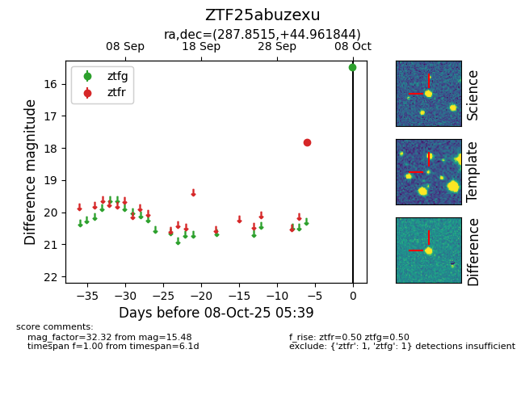

FINK: ZTF25abuzexu
Lasair: ZTF25abuzexu
ALeRCE: ZTF25abuzexu
ZTF25abuzexu (ztf,fink)
equatorial (ra, dec) = (287.8515,+44.96184)
galactic (l, b) = (75.9167,+15.51062)

last ztfg=15.48, ztfr=17.82
1 ztfg, 1 ztfr detections